Introduction
Overview
The Dual Mode Data Visualization (Metabolomics App) allows you to perform downstream analysis on single mode (either positive or negative mode) as well as dual mode (both positive and negative mode) targeted, semi-targeted (without retention time) and untargeted unlabeled metabolomics data along with insightful visualizations. The app provides a variety of normalization methods, scaling options and data visualization functionalities, thereby allowing an efficient analysis of the data to get actionable insights.
Scope of the App
- The application supports data with a simple matrix having samples in the columns and metabolites in the rows.
- It provides different normalization and scaling methods to perform on the data.
- Performs quality checks for internal standards, metabolites, and samples.
- Performs statistical analysis using limma and provides interactive visualizations.
- Provides heatmap visualization along with different algorithms like hierarchical clustering, k-means, correlation etc.
- Performs comparative analysis for the different cohort comparisons.
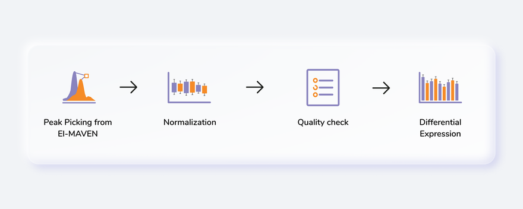
Getting Started
User Input
To process single mode data, the following files are required:
- El-MAVEN Output File
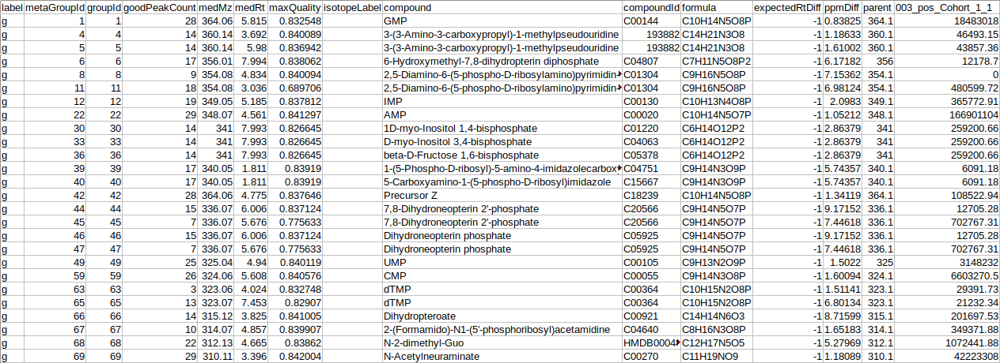
- El-MAVEN Internal Standards File (Optional)
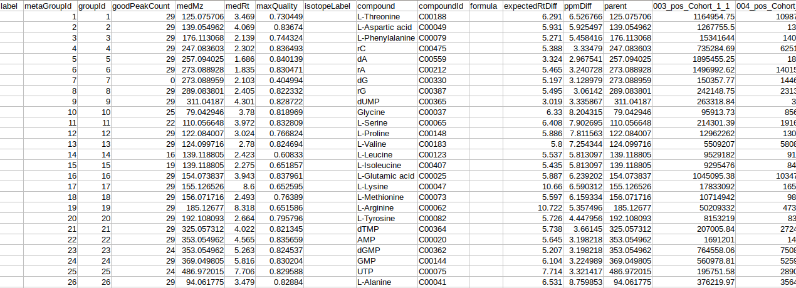
- Cohort Mapping File
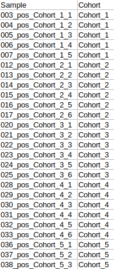
To process dual mode data, the following files are required:
- El-MAVEN Output Files from both positive and negative mode
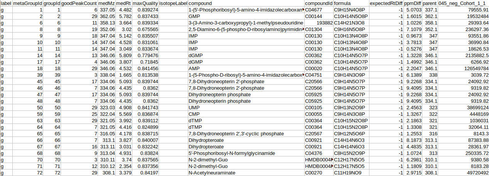
- El-MAVEN Internal Standards File from both, positive and negative modes (Optional)
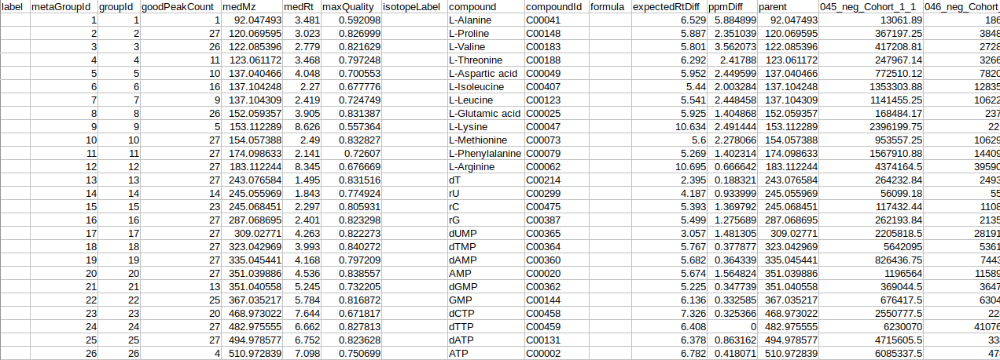
- Cohort Mapping File
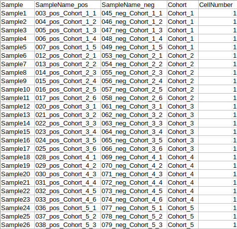
NOTE:
- An already processed .gct file can also serve as input to the app.
- The internal standard file is optional.
Caveats
Pathways analysis only works when the data has KEGG Ids within the “compoundId” column.
Tutorial
Select Dual Mode Data Visualization (Metabolomics App) from the dashboard under the Metabolomics Data Tab as shown in Figure 8. Create a New Workspace or choose from the existing one from the dop-down and provide the Name of the Session to be redirected to Dual Mode Data Visualisation (Metabolomics App)'s upload page.
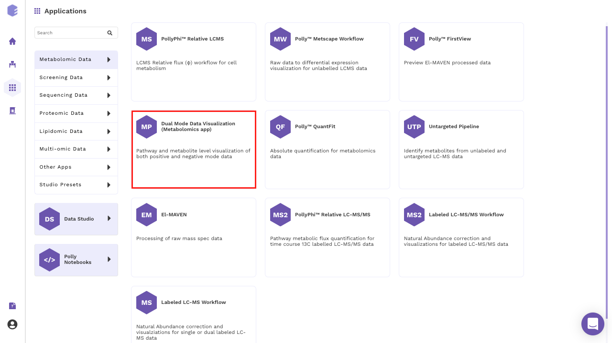
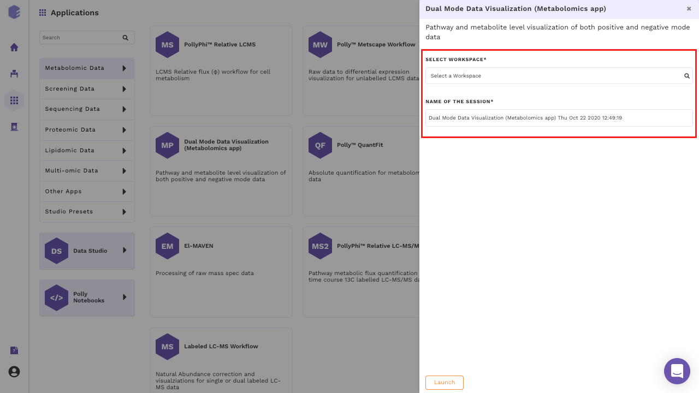
Upload Files
The Upload Files interface allows you to upload the input files required for processing through the app which includes the group summary matrix files from El-MAVEN and metadata file, or a .gct file.
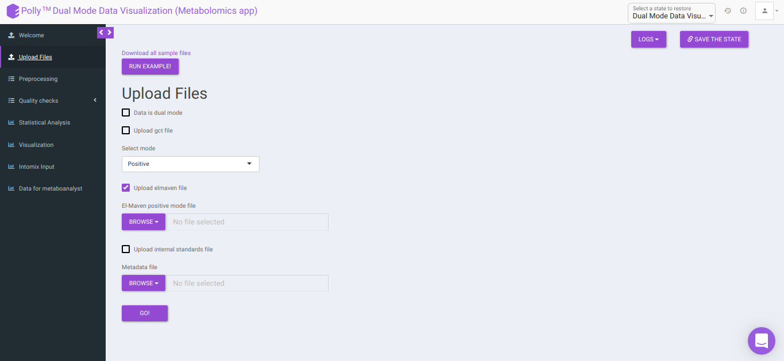
-
Download all sample files: This option would allow you to download the demo files which include the El-MAVEN output in group summary matrix format and cohort mapping file.
-
Upload GCT file: Checking this box prompts the app that the input data is in the .gct format.
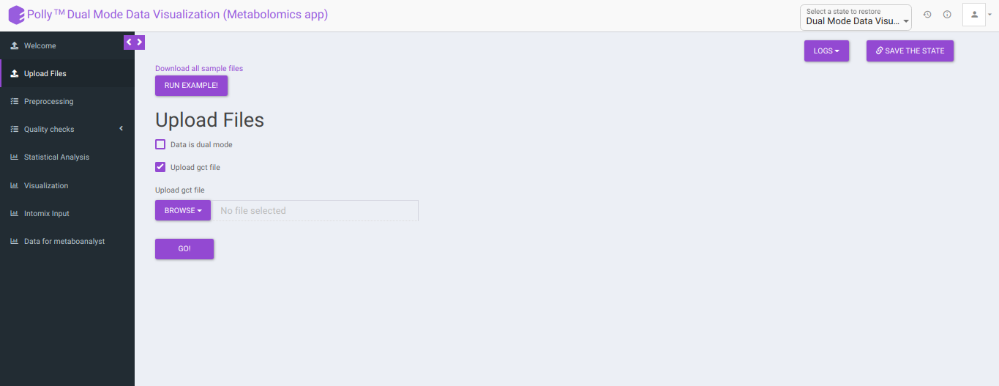
- Select mode: This drop-down allows you to select the specific mode of the data in case of single mode, meaning whether it is:
- Positive, or
- Negative

To upload the output file of internal standards, click on Upload internal standards file.
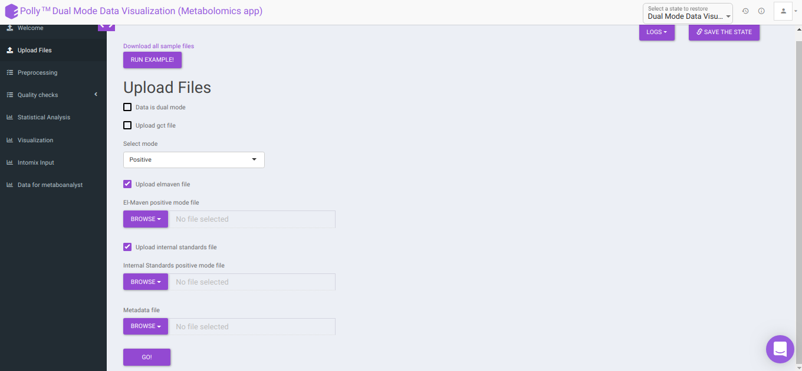
-
El-MAVEN positive/negative mode file: This allows you to upload the positive/negative mode El-MAVEN output file (depending on the mode selected) in the .csv peak table format.
-
Internal Standards positive/negative mode file: This allows you to upload the positive/negative mode internal standards El-MAVEN output file (depending on the mode selected) in the .csv peak table format.
-
Metadata file: This allows you to upload the cohort mapping file in the .csv format.
-
Data is dual mode: Checking this box prompts the app that the input data is from dual-mode (positive and negative modes).
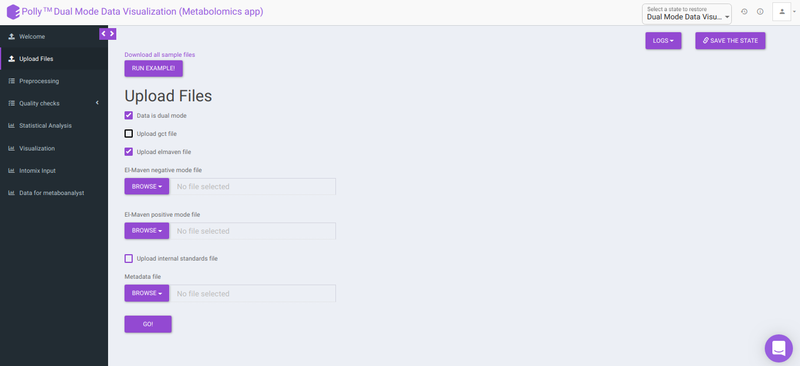
To upload the output file of internal standards, click on Upload internal standards file.
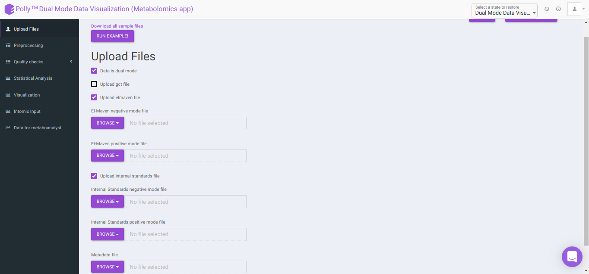
-
El-MAVEN negative mode file: This allows you to upload the negative mode El-MAVEN output file in the .csv peak table format.
-
El-MAVEN positive mode file: This allows you to upload the positive mode El-MAVEN output file in the .csv peak table format.
-
Internal Standards negative mode file (optional): This allows you to upload the negative mode internal standards El-MAVEN output file in the .csv peak table format.
-
Internal Standards positive mode file (optional): This allows you to upload the positive mode internal standards El-MAVEN output file in the .csv peak table format.
-
Metadata file: This allows you to upload the cohort mapping file in the .csv format.
Click on Go to proceed to the next step.
Note:
- The format of the metadata file for dual-mode should be in a specific format.
To make common sample names across the different modes, click on Replace samples to common sample names.
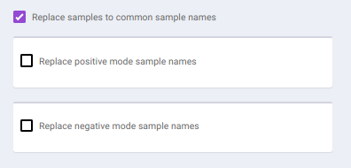
Pre-processing
The Pre-processing interface allows you to perform a multitude of functions on the data such as:
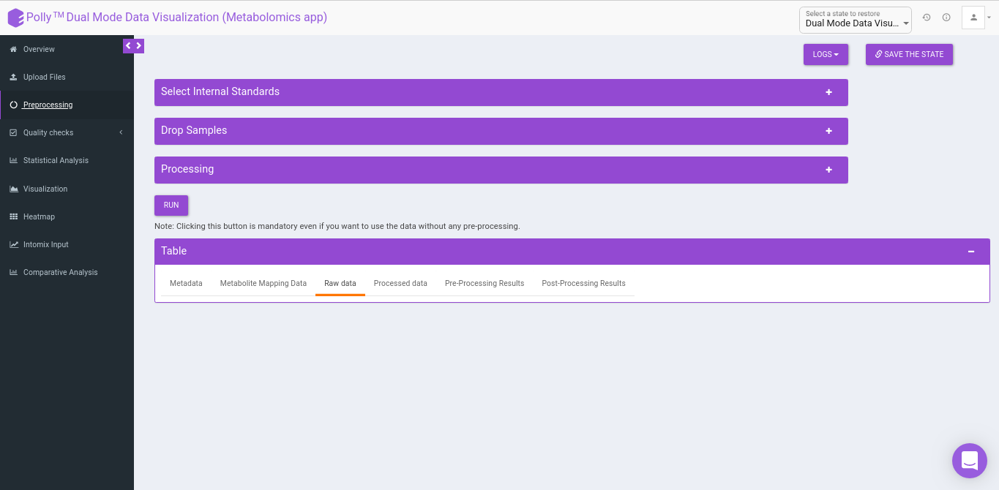
- Select Internal Standards: This allows you to select the internal standard(s) from within the El-MAVEN output file when a separate internal standards file is not provided as input.
Note:
- In case, the internal standard(s) are not in the El-MAVEN output file but in the separate internal standards file, they will not show up in the drop down menu. To select the desired internal standards, select them in Normalize by individual internal standards option under Normalize by Internal standards in the Perform Normalization > Normalization.
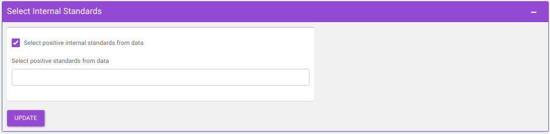
- Drop Samples: This allows you to drop/remove certain samples from further analysis which could be blank samples or any samples that didn’t have a good run during MS processing. Samples can be dropped by clicking on Drop Samples as shown in Figure 18 after selecting the sample(s) from the drop down menu.
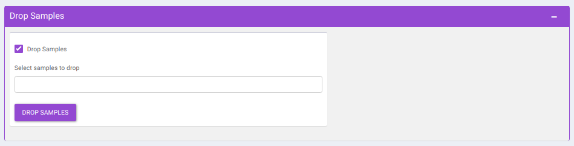
- Normalize by Internal standards performs normalization using the internal standards.
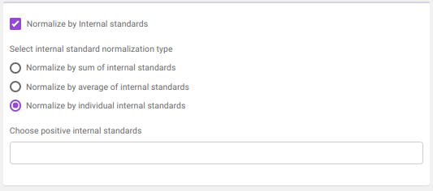
-
Normalize by sum of internal standards normalizes by the sum of the standards provided.
-
Normalize by average of internal standards normalizes by the average of the standards provided.
-
Normalize by individual internal standards normalizes by the internal standards selected previously.
-
Normalize by metabolites normalizes by any particular metabolite selected.
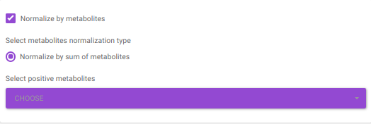
-
Normalize by sum of metabolites normalizes by the sum of metabolites. Here, the user can select the metabolites from the dropdown option.
-
Normalize by metadata column normalizes by any additional column specified in the metadata file. such as cell number etc.
-
Normalize by control normalizes by control samples present in the data.
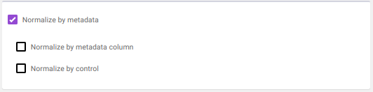
-
log2
-
y + log2(x) [where data is shifted by max value of data plus one]
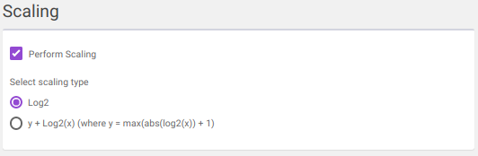
Note:
- If internal standard(s) have already been selected in the Select Internal Standards option, they would be present in the drop down.
Clicking on Run will perform the normalization and scaling based on the parameters selected.
- Table: This displays the data table and visualizations for both pre- and post- normalization.
- Metadata: This displays the metadata uploaded. This data can be downloaded in the .csv format as shown in Figure 23.
- Metabolite Mapping data: This displays the metabolite data uploaded. This data can be downloaded in the .csv format as shown in Figure 24.
- Raw data: This displays the raw El-MAVEN data uploaded. This data can be downloaded in the .gct format as shown in Figure 25.
- Processed data: This displays the normalized El-MAVEN data based on the parameters selected. This data can be downloaded in .gct format as shown in Figure 26.
- Pre-Processing Results: This allows you to have a look at the sample distribution with the help of density plot and box-plot before normalization as shown in Figure 27.
- Post-Processing Results: This allows you to have a look at the sample distribution with the help of the density plot and box-plot after normalization. This provides you with the ability to check the effect of the normalization parameters on the data as shown in Figure 28.
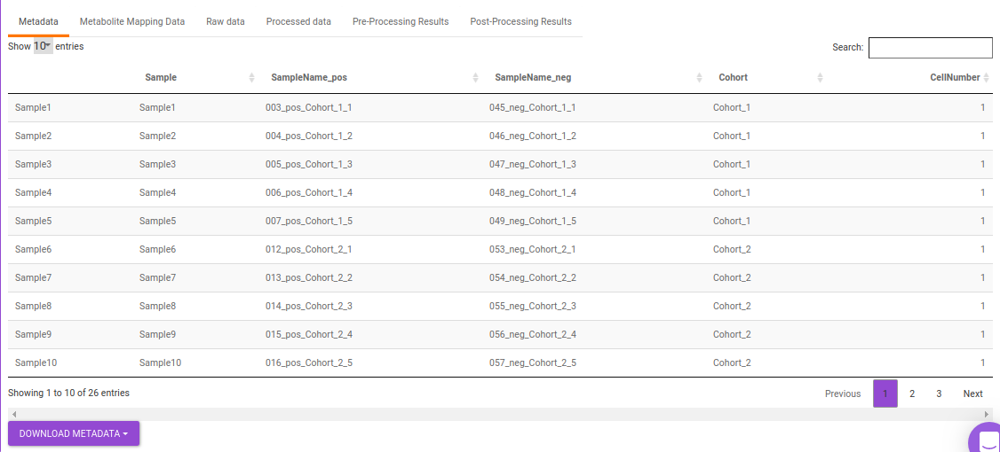
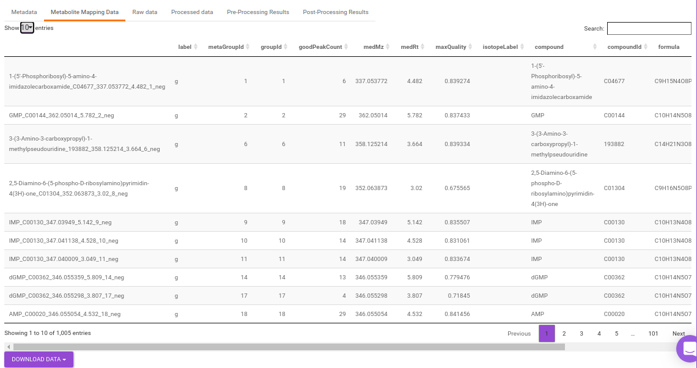
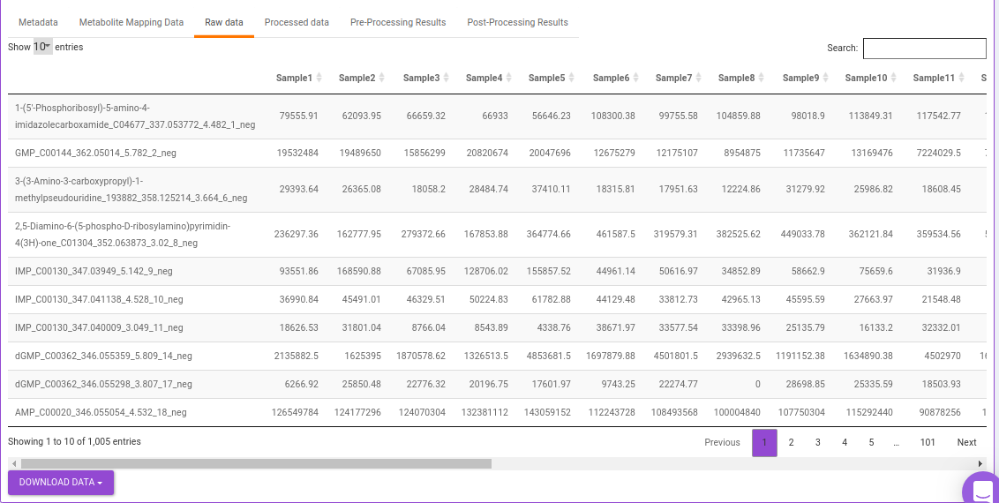
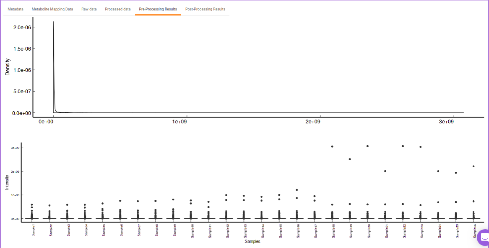
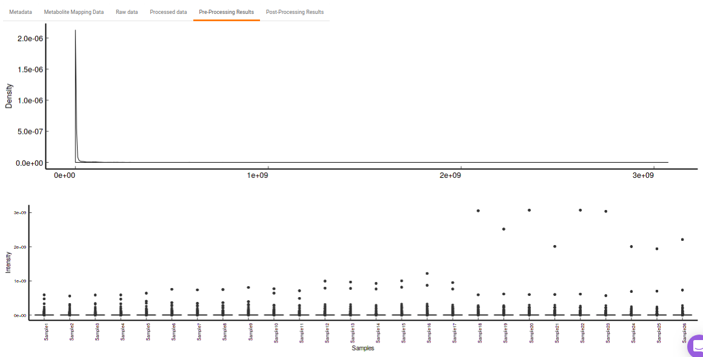
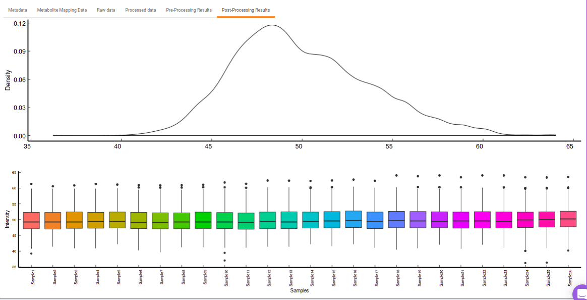
Quality Checks
This tab allows you to perform quality checks for the internal standards, metabolites and across samples with the help of interactive visualizations.
Internal Standards
It allows you to have a look at the quality of the internal standards used in the data with the help of the different visualizations for any individual as well as for all internal standards.
- Internal Standards (Individual): You can visualize the quality checks for any internal standard specifically. This allows you to select the internal standard by name, followed by another drop down to select by uniqueId of the feature. It’s also possible to specify the cohort order for the plots. For dual mode data, you can specify the internal standard of the particular mode from the Select uniqueIds drop down.
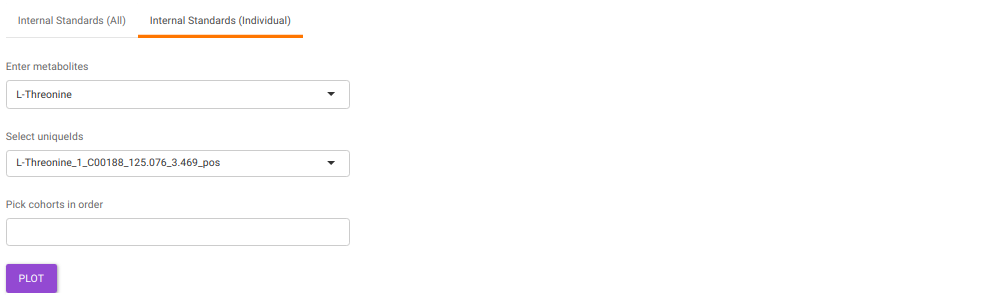
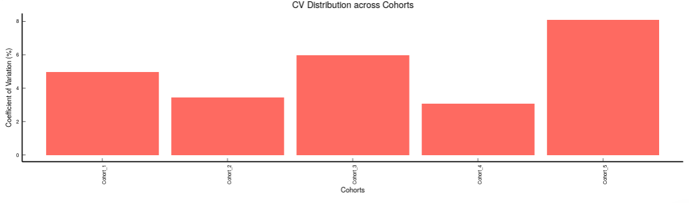
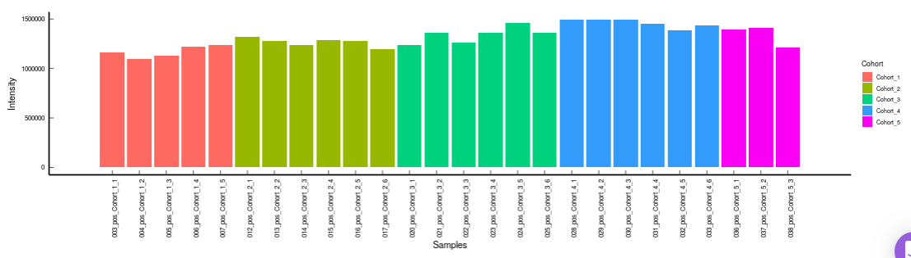
-
Metabolites: It allows you to have a look at the quality of the metabolites present in the data with the help of the Coefficient of Variation plots
- Metabolites CoV Boxplot visualizes the Coefficient of Variation across different cohorts in the data in the form of the boxplot. It’s also possible to specify the cohort order for the plots as shown in Figure 32.
- Metabolites CoV Barplot visualizes the Coefficient of Variation as a quality check for any specific metabolite. To use this, select the metabolite followed by the unique id of the feature using the drop downs shown in Figure 33. It’s also possible to specify the cohort order for the plots as shown in FIgure 33.
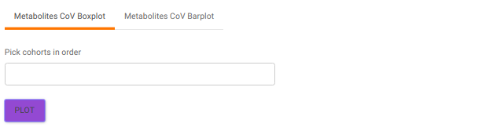
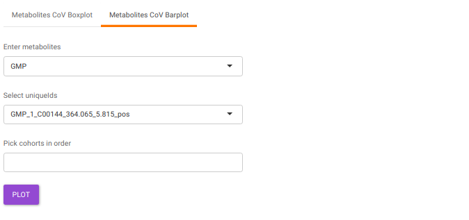


PCA
This allows you to understand the clustering pattern between biologically grouped and ungrouped samples.
- PCA (2D) provides PCA visualization in a two-dimensional manner by selecting the PC values for x- and y- axes. It’s also possible to specify the cohort order for the plots.
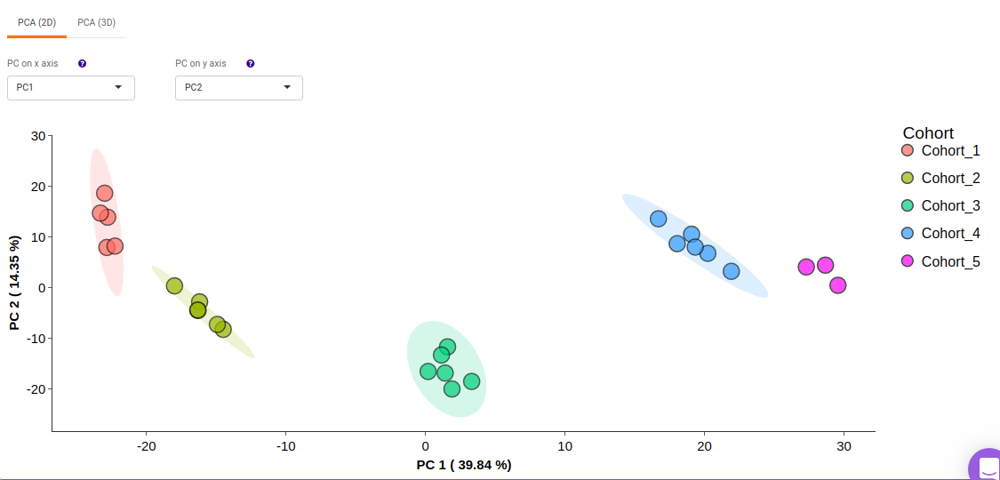
- PCA (3D) provides PCA visualization in a three-dimensional manner by selecting the PC values for x-, y- and z- axes. It’s also possible to specify the cohort order for the plots.
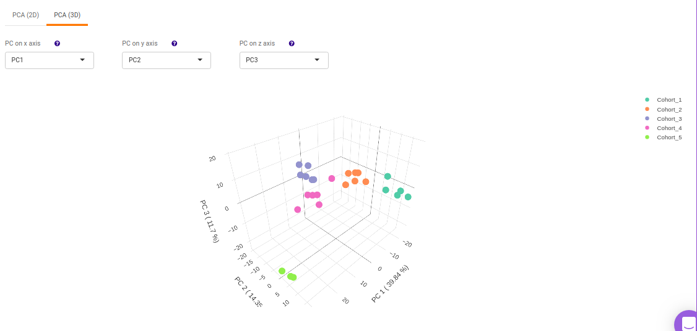
Statistical Analysis
This interface allows you to perform differential expression analysis with the aim to identify metabolites whose expression differs between any specified cohort conditions. The 'limma' R package is used to identify the differentially expressed metabolites. This method creates a log2 fold change ratio between the two experimental conditions and an 'adjusted' p-value that rates the significance of the difference.

The following parameters are available for selection:
- Select Cohort A and Cohort B: Default values are filled automatically for a selected cohort condition, which can be changed as per the cohorts of interest.
- Select p-val or adj. p-val: Select either p-value or adj. p-value for significance.
- p-val or adj. p-val cutoff: By default, the value is 0.05 but can be changed if required.
- log2FC: Specify the cut-off for log2 fold change with the help of the slider.
Once the parameters are specified, click on the Update button to plot the volcano plot. Based on the parameters specified, a volcano plot is displayed. The volcano plot helps in visualizing metabolites that are significantly dysregulated between two cohorts.
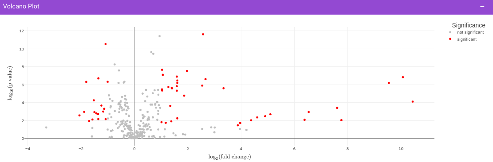
Filtered Metabolites Visualization provides the visualization of cohort-based distribution of the metabolites that are significant based on the parameters specified.
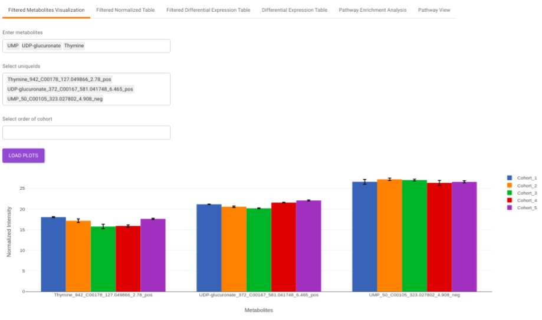
Filtered Normalized Table contains the normalized data of the metabolites that are significant based on the parameters specified.
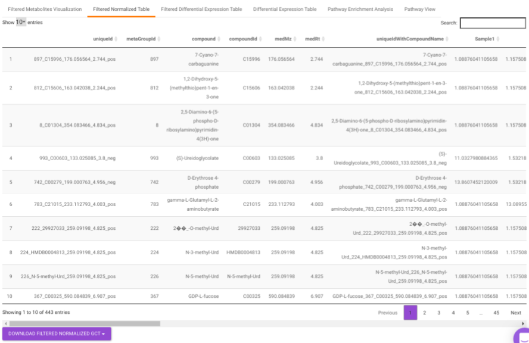
Filtered Differential Expression Table contains only the metabolites that have significant p-values as specified.

Differential Expression Table contains all the differentially expressed metabolites without any filtering.
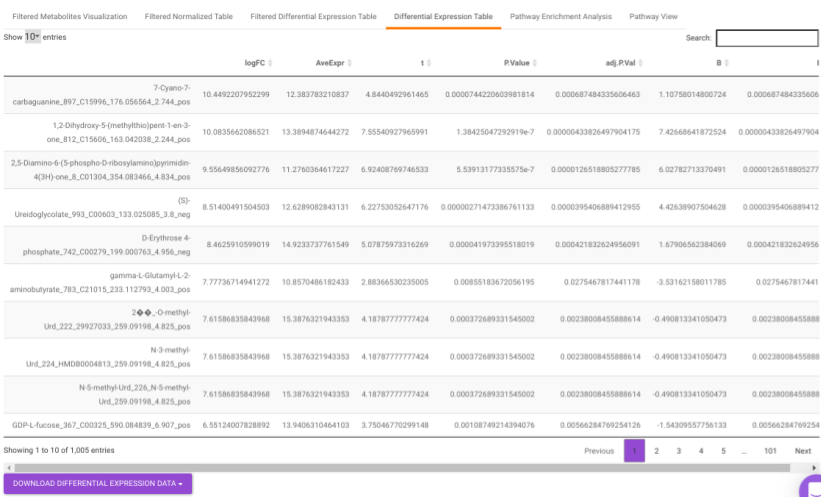
Pathway Enrichment Analysis performs the pathway enrichment analysis for the significant metabolites based on the parameters specified for the particular cohort comparison. Click on the Perform Pathway Analysis button. As a result, you get Metabolite Set Enrichment Analysis and Pathway Topology Analysis plots that can be downloaded under the Plot panel. You can also obtain the tablular representation of the plots by selecting onto the Table panel.


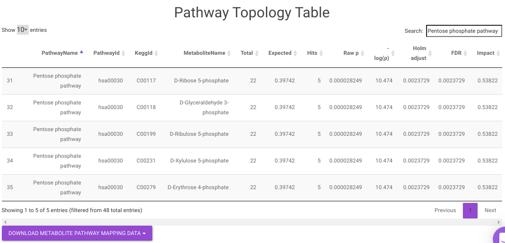
Pathway View plots the pathway view of the metabolites that show up in the Metabolite Set Enrichment Analysis. It maps and renders the metabolite hits on relevant pathway graphs. This enables you to visualize the significant metabolites on pathway graphs of the respective metabolites they belong to. You can select your metabolite of interest from the drop-down and click on Plot. This will plot the pathway view of the metabolism selected. You can also download the plot as a .png file by clicking onto the Download Pathview Plot button.

Visualization
This interface allows you to visualize the cohort-based distribution of a specific metabolite or a group of metabolites on the basis on its normalized intensity values.
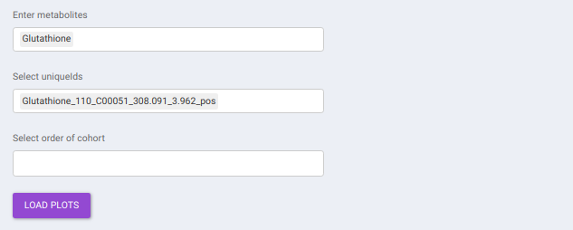
- Enter metabolite: Select the metabolite(s) of interest from the drop down option.
- Select uniqueIds: You can specifically select the metabolic feature of interest for the metabolite from the drop down option.
- Select order of cohort: You can also specify the particular order of the cohort to visualize the bar plot.
Once the parameters are selected, click on Load Plots to plot the bar plot for the metabolite.
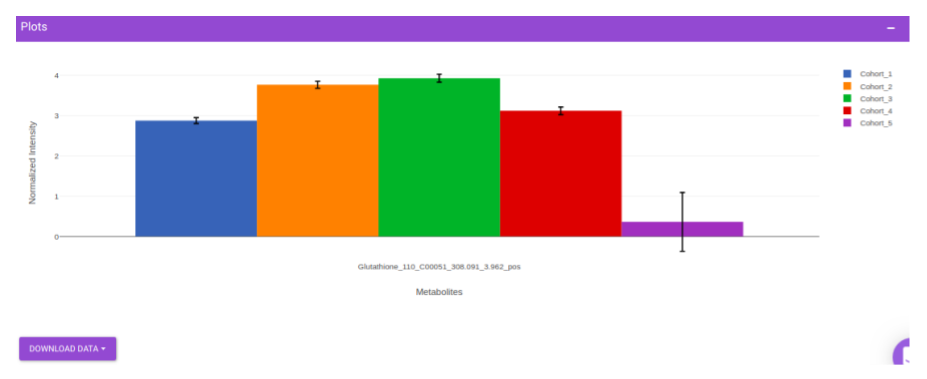
IntOmix Input
This tab allows you to generate the input for IntOmix where you can visualize the significantly altered metabolic network modules between any two experimental conditions.

Specify two or more cohorts from the Select cohorts drop down option for which you want to generate the IntOmix input. Once the required cohorts are selected, click on Generate to generate the IntOmix input.

NOTE:
- At least two cohorts are required to create the input file.
Heatmap
This tab allows you to produce a heatmap of the processed data, so that you can observe the level of expression in a visual form. Click on Load Heatmap button to generate the heatmap.
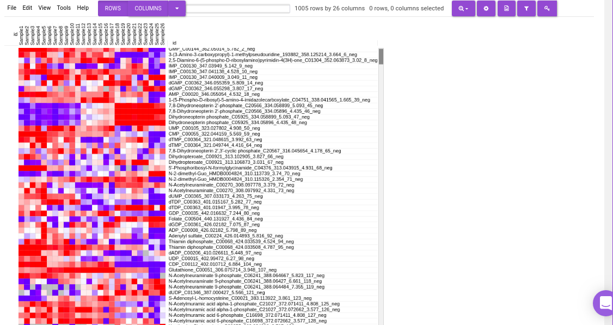
Comparative Analysis
This tab allows you to perform comparative analysis between a set of cohorts in your data. As a result of which you can visualize the UpSet plot of the unique and overlapping metabolites for the selected cohort comparisons. Further, you can also perform pathway analysis on the metabolites for the set intersections of interest.
- Comparison Parameters tab allows you to select the cohorts of interest for which you would want to get the set intersections. You can select the cohorts from the Select cohorts drop-down and click on Run button. Further, you can also specify the p-value cut-off and log2FC threshold.
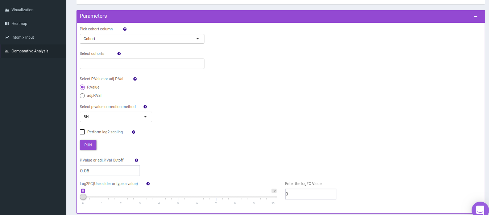
You will get a table as a result of the parameters specified which will have the significant metabolites for the different cohort comparisons along with their corresponding p-values and log2FC values. You can also download this table as a .CSV file.
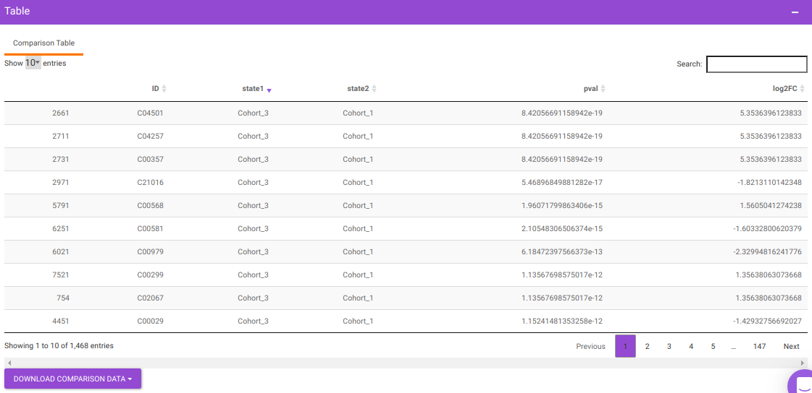
- UpSet Plot tab allows you to visualize the set intersections for the cohort comparisons selected where every comparison consists of the significant metabolites associated with the same. You can select the cohort comparisons of interest from the Select Cohort Comparison drop-down which represents all the possible comparisons for the cohorts specified in the previous tab. Click on Plot to get the UpSet plot for the specified comparisons.
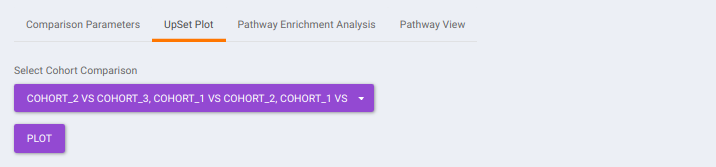
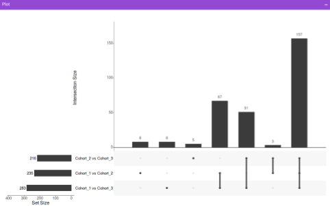
Along with the plot, you can also get all the constituent metabolites for the respective comparisons in a tabular format that can be downloaded as a .CSV file.
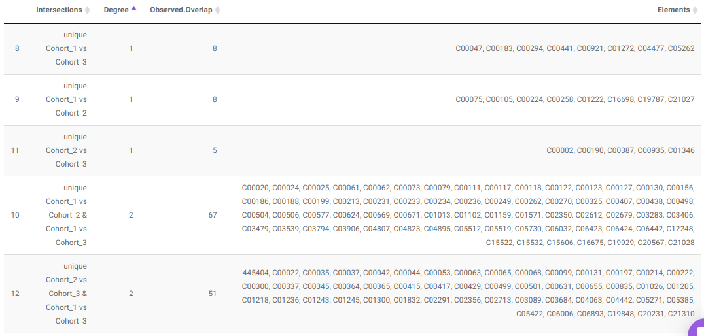
- Pathway Enrichment Analysis tab allows you to perform the pathway enrichment analysis for the significant metabolites that show up based on the parameters specified in the Comparison Parameters tab for the particular set of cohort comparison. Click on the Perform Pathway Analysis button. As a result, you get Metabolite Set Enrichment Analysis and Pathway Topology Analysis plots that can be downloaded under the Plot panel. You can also obtain the tablular representation of the plots by selecting onto the Table panel.
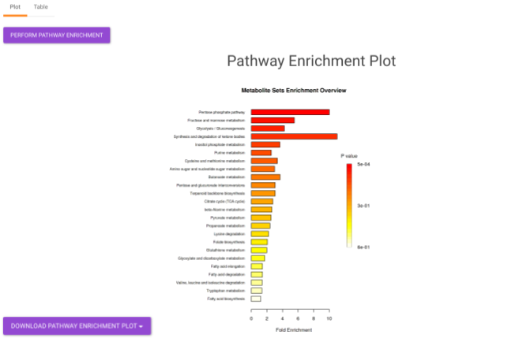
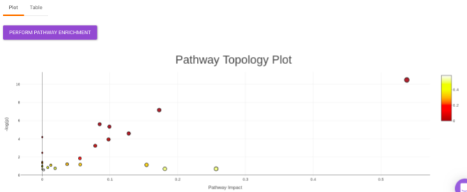

Pathway View plots the pathway view of the metabolites that show up in the Metabolite Set Enrichment Analysis. It maps and renders the metabolite hits on relevant pathway graphs. This enables you to visualize the significant metabolites on pathway graphs of the respective metabolisms they belong to. You can select your metabolite of interest from the drop-down and click on Plot. This will plot the pathway view of the metabolite selected. You can also download the plot as a .png file by clicking onto the Download Pathview Plot button.
Data for MetaboAnalyst
This tab allows you to generate the input for MetaboAnalyst that enables statistical, functional and integrative analysis of metabolomics data by providing a variety of modules for different functionalities.
Specify the cohort comparison of interest by sleecting the cohorts from the Select cohort A and Select cohort B drop downs. Click on Download data for metaboanalyst to download the .csv file. Clicking on Go to metaboanalyst will redirect you to MetaboAnalyst’s homepage.
NOTE:
- Normalized intensity data (normalization method chosen in pre-processing tab) is downloaded.